Master醒來的地方，是未曾見過的景色。
那裡是魔法少女治理的魔法國度…！？
受突然跳出來的可疑魔法之杖引導而相遇的少女。
在左看右看都是不可思議的世界，
幫助正在尋找朋友的少女ーー
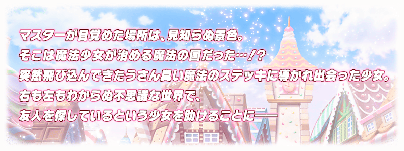
◆活動舉辦期間◆
2019年1月23日(三) 17:0021:00～2月6日(三) 11:59
◆活動概要◆
舉辦合作活動「復刻版:魔法少女紀行 ～Prisma・Codes～ -Re-install-」！
送上「Fate/kaleid liner 魔法少女☆伊莉雅!!」的原作者ひろやまひろし監修的原創故事，舉辦特別的活動！
來自「Fate/kaleid liner 魔法少女☆伊莉雅!!」的「克洛伊・馮・愛因茲貝倫」做為活動限定Servant「★4(SR)克洛伊・馮・愛因茲貝倫」登場！
另外，也可獲得做為復刻版活動新要素的新活動限定概念禮裝「★4(SR)パラドクス・エースキラー」！
本活動是以魔術少女的世界做為舞台，女性Servant活躍的活動。
隨著主線關卡的進行，會發生挑戰與強力魔術少女戰鬥的「World End Match」。
打倒魔術少女，推進主線關卡，讓活動限定Servant「★4(SR)克洛伊・馮・愛因茲貝倫」正式加入吧！
※本活動為再調整在2016年舉辦的合作活動「復刻版:魔法少女紀行 ～Prisma・Codes～」更容易遊玩的「復刻版活動」。 ※一部份的關卡為日後開放。
◆活動參加條件◆
滿足以下條件的Master才能參加
・通過「特異點F 炎上汙染都市 冬木」
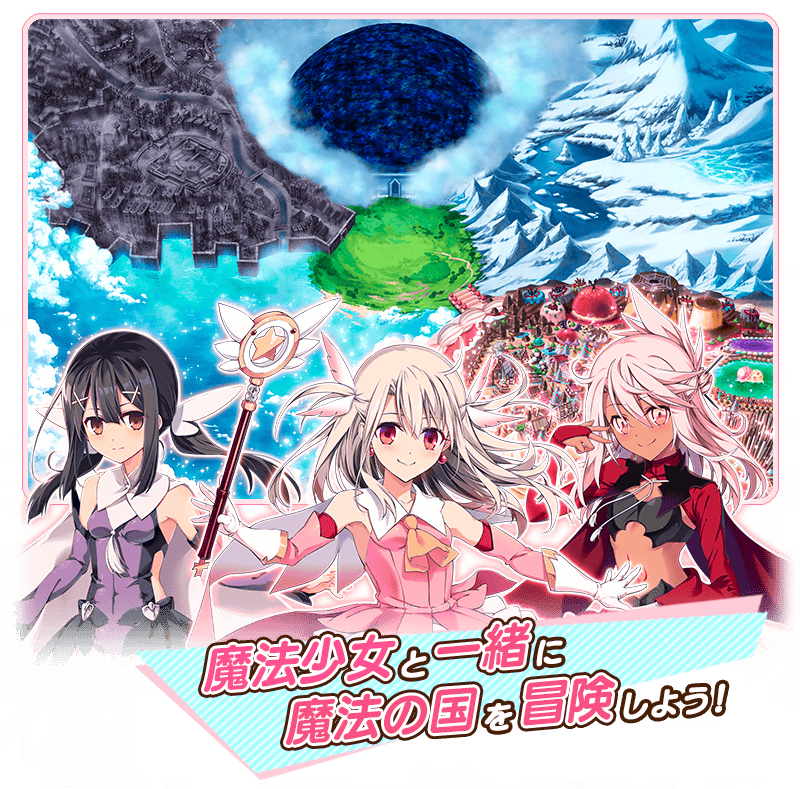
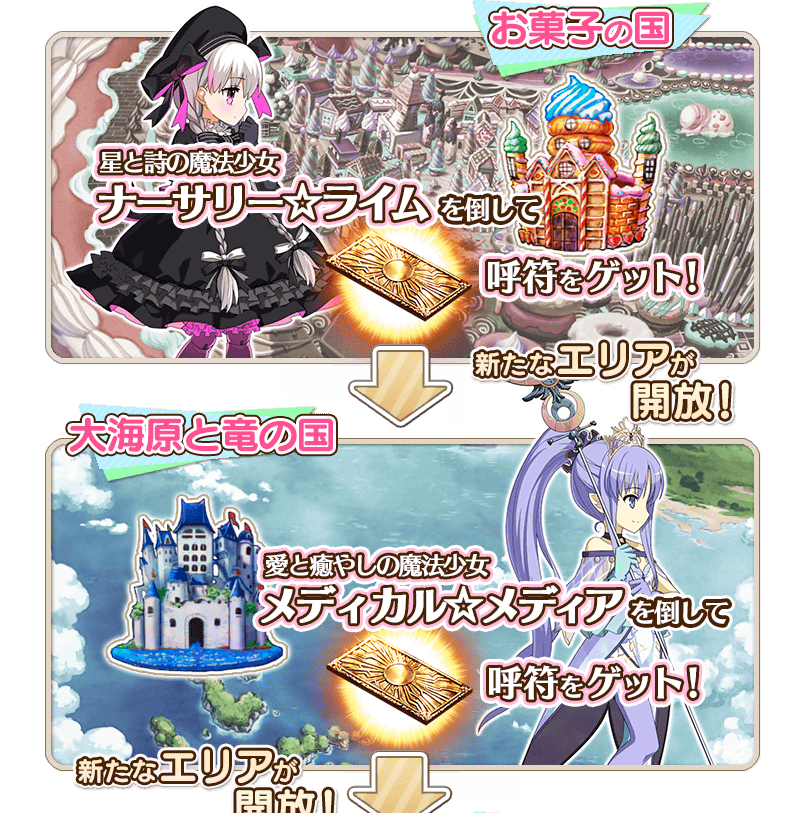
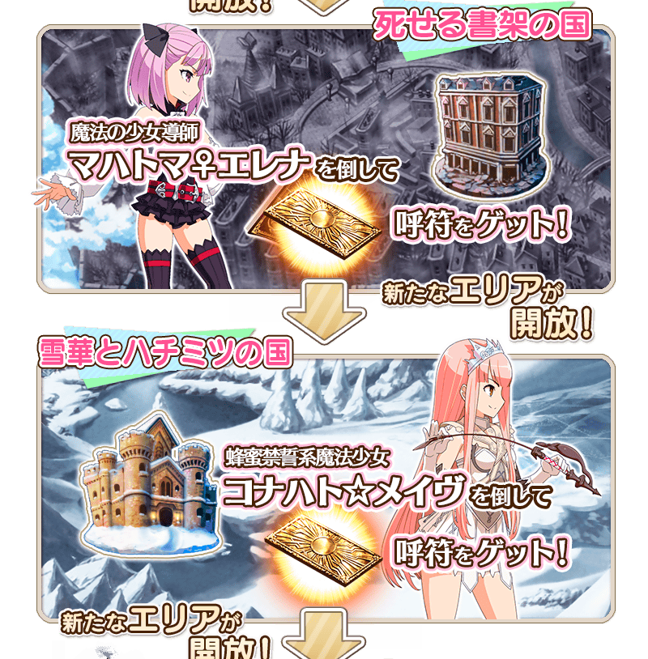
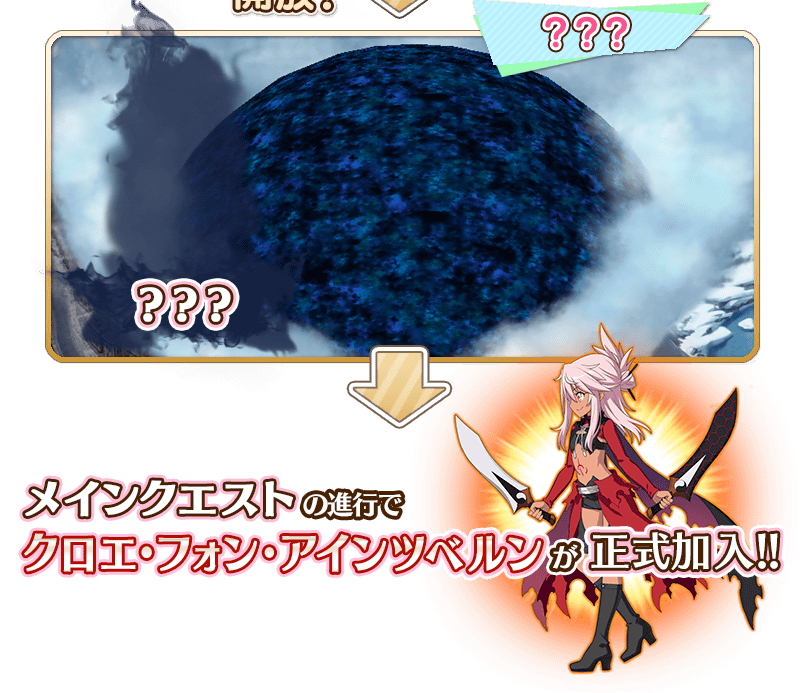
與魔術少女的戰鬥被稱作「World End Match」的特殊形式戰鬥。
魔術少女擁有著與平常的HP不同，靠一次戰鬥無法擊倒的龐大HP「Episode Countdown」，在給予傷害時同時減少普通的HP與「Episode Countdown」。
戰鬥藉由「普通的HP變少，魔法少女會有攻擊力變高、寶具累積數減少等戰鬥內容變化，最終將「Episode Countdown」變0打倒魔法少女。
另外，魔法少女們有著對透過特定的指令卡的攻擊較弱的弱點。
針對各自的弱點，從隊伍編成和裝備等下工夫挑戰「World End Match」！
※從關卡撤退時給予的傷害無效，「Episode Countdown」不會減少。
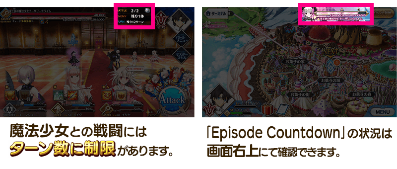
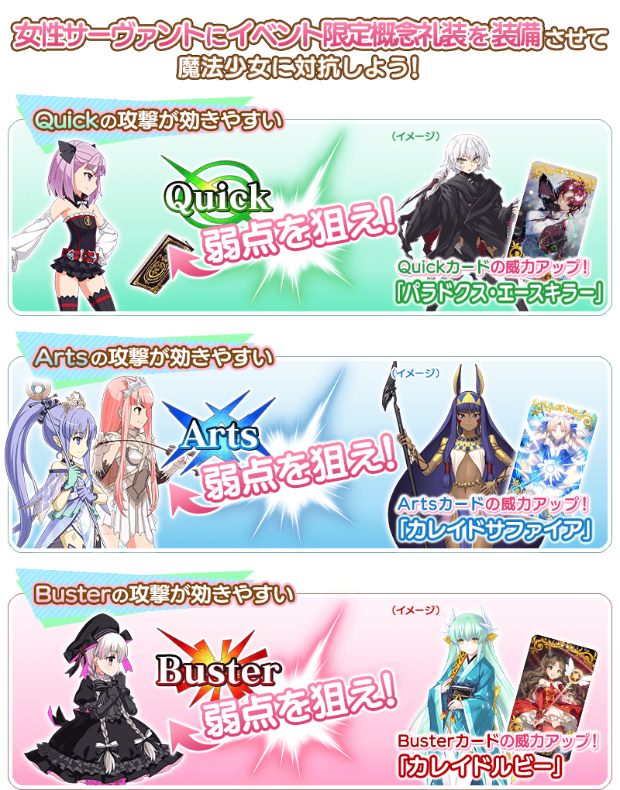
本活動中，進行主線關卡的話會發生「收集特定的道具一定數以上」「擊倒特定的敵人」等達成各式各樣條件就可獲得豪華報酬的任務！
另外，對應任務的達成狀況，會開放新的關卡和任務。
攻略任務，一邊獲得達成報酬一邊推進主線關卡吧！
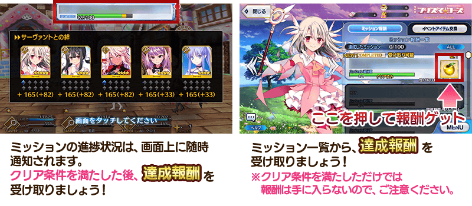
【1月30日(三) 17:00追記】
以通過合作活動「復刻版:魔法少女紀行 Prisma・Codes～ -Re-install-」所有「World End Match」、特定的活動關卡及「終局特異點」的Master做為對象，開放高難易度的挑戰關卡。
挑戰關卡就算通過後也不會消失，可以變更Servant和概念禮裝的組合後無數次挑戰。
※關卡通過報酬、戰利品、Master經驗值、魔術禮裝經驗值、絆點數只可在初次通過時獲得。
◆挑戰關卡開放時間◆
2019年1月30日(三) 17:00～
◆挑戰關卡參加條件◆
滿足以下條件的Master才能參加
・通過所有「World End Match」與特定活動關卡
・通過「終局特異點」
◆挑戰關卡初次通過報酬◆
傳承結晶 1個
超值攻略方法・其1
本活動的期間中，強化「★4(SR)克洛伊・馮・愛因茲貝倫」時的獲得經驗值變成2倍。
是讓剛加入的「★4(SR)克洛伊・馮・愛因茲貝倫」等級一口氣上升的機會！
◆舉辦期間◆
2019年1月23日(三) 17:0021:00～2月6日(三) 11:59
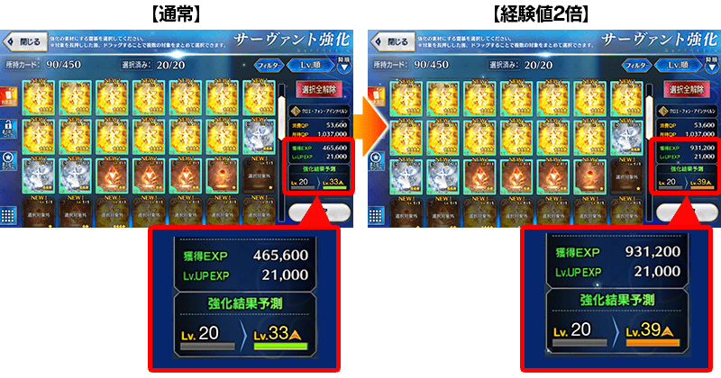
超值攻略方法・其2
本活動的期間中，下表的Servant在活動關卡中會得到「自身的攻擊威力提升」與「絆點數獲得量提升」的加成。
強化對象Servant，挑戰活動吧！
※活動加成的效果量因Servant而異。
※瑪琇・基利艾拉特沒有「絆點數獲得量提升」的效果。
※自1月19日(六) 16:00，在Servant選擇畫面和Servant強化畫面等追加「下次活動對象」篩選器。
由於是只顯示於下個舉辦活動活躍Servant的便利功能，敬請活用。
【活動加成的效果量與對象Servant】
| 自身的 攻擊威力 |
絆點數 獲得量 |
職階 | 稀有度 | Servant名 |
|---|---|---|---|---|
| +100％ | ＋50％ | Archer | ★★★★ | 克洛伊・馮・愛因茲貝倫 |
| Caster | ★★★★★ | 伊莉雅絲菲爾・馮・愛因茲貝倫 | ||
| ★★★★ | 美遊・艾蒂菲爾特 | |||
| - | Shielder | ★★★ | 瑪琇・基利艾拉特 | |
| +50% | ＋20％ | Rider | ★★★★★ | 女王梅芙 |
| Caster | ★★★★ | 海倫娜・布拉瓦茨基 | ||
| ★★★★ | 酒吞童子 | |||
| ★★★★ | 童謠 | |||
| ★★★★ | 美狄亞〔Lily〕 |
※就算是對象Servant也會有未在本活動的主線劇本登場的情況。
超值攻略方法・其3
本活動中只有女性Servant可獲得與魔法少女對抗的力量。
女性Servant裝備可以在活動道具交換和關卡報酬、任務報酬入手的活動限定概念禮裝「パラドクス・エースキラー」「カレイドサファイア」「カレイドルビー」的話，在本活動中會提升攻擊威力！
並且在「World End Match」中會提升各指令卡的威力。
※除了性別「女性」的Servant外、夏爾・德翁、恩奇杜、阿斯托爾福、始皇帝也包含在活動限定概念禮裝的效果對象。
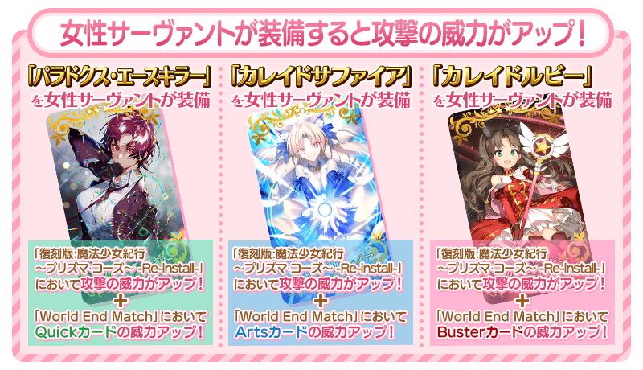
超值攻略方法・其4
裝備期間限定概念禮裝的話會提升活動收集道具的掉落獲得數！
裝備在聖晶石召喚Pick Up的期間限定概念禮裝「蒼玉の魔法少女」「見敵必殺」「ずんがずんが！」的話，會提升活動收集道具「獅子號君」「魔法☆武士道武藏」「高級布丁」各自的掉落獲得數。
※請注意各關卡的道具掉落率並非100％。
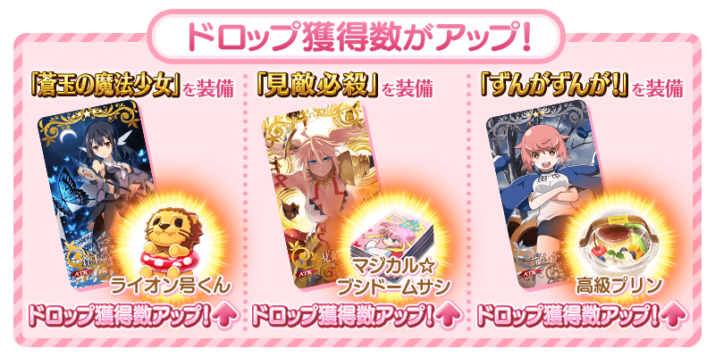
活動收集道具可自點擊管理室(ターミナル)畫面右上「活動報酬」鍵所顯示的「活動道具交換」畫面，交換以下的道具。
※關於簡易靈衣「聖約・型態(テスタメント・フォーム)」開放權、英靈結晶・日輪之芙芙ALL★4(ATK)、英靈結晶・流星之芙芙ALL★4(HP)，在通過所有1月30日(三)開放的本活動主線關卡後才能交換。
◆交換期間◆
2019年1月23日(三) 17:0021:00～2月13日(三) 11:59
※交換期間結束後｢獅子號君｣｢魔法☆武士道武藏｣｢高級布丁｣會消失。
◆能用獅子號君交換的道具◆
|
【活動限定概念禮裝】 【靈衣開放權】 【技能強化＆靈基再臨素材】 【靈基再臨素材】 【其他道具】 |
◆能用魔法☆武士道武藏交換的道具◆
|
【活動限定概念禮裝】 【技能強化＆靈基再臨素材】 【靈基再臨素材】 【其他道具】 |
◆能用高級布丁交換的道具◆
|
【活動限定概念禮裝】 【技能強化＆靈基再臨素材】 【其他道具】 |
| 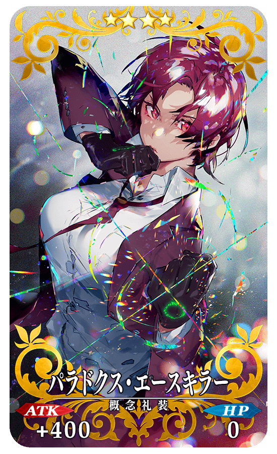 |
【復刻版追加概念禮裝】 |
| 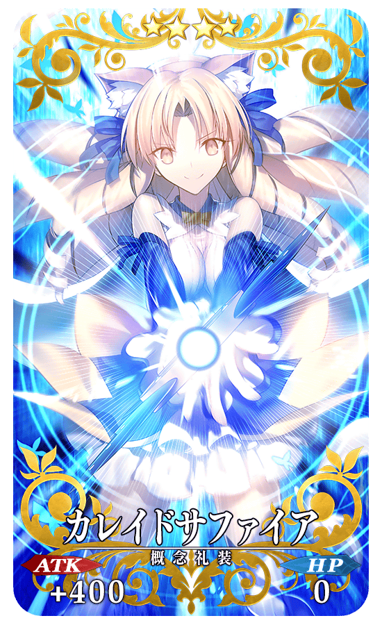 |
★★★★SR |
| 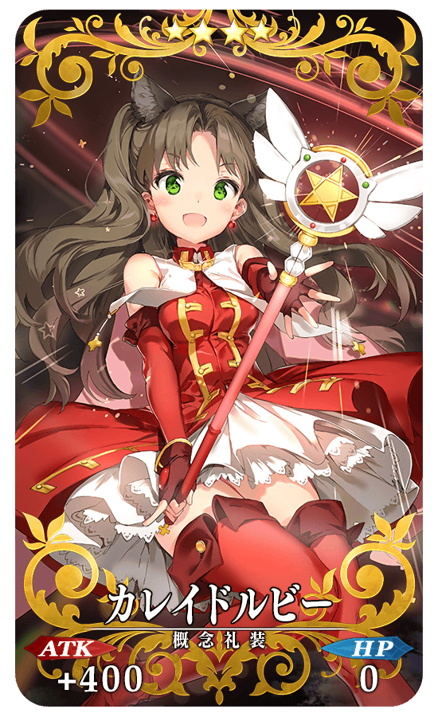 |
★★★★SR |
◆得到活動限定概念禮裝EXP卡「マジカルルビー」吧！◆
做為活動限定的報酬，可入手能大幅強化概念禮裝大幅的EXP卡！
無論如何請藉此機會，強化中意的概念禮裝！
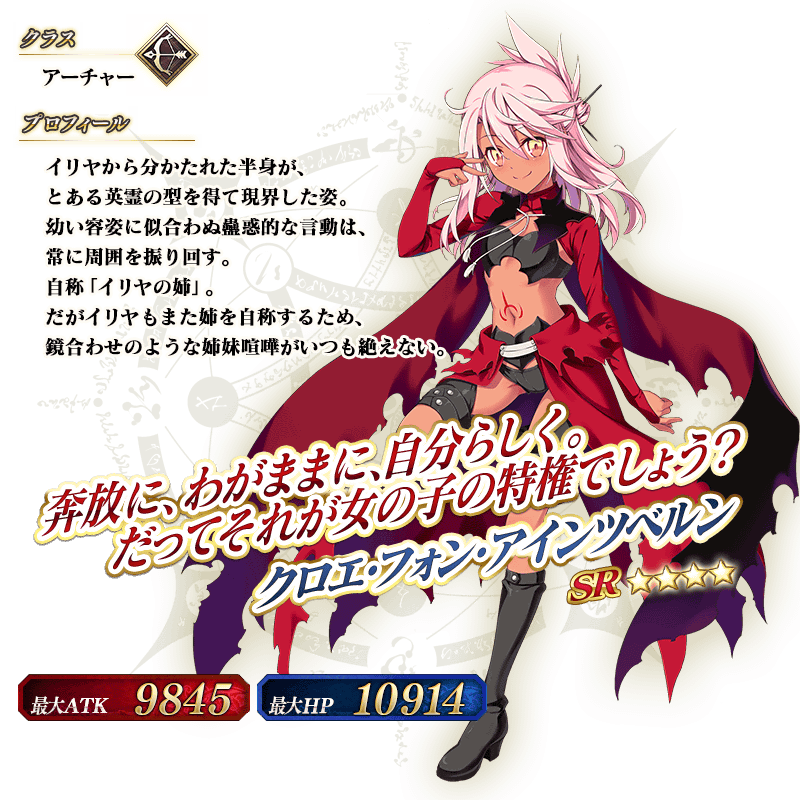
◆靈基再臨◆
使用可靠任務報酬入手的「心形手鏈(ハートのブレスレット)」，重複4次靈基再臨的話，卡面會有所變化！
※克洛伊・馮・愛因茲貝倫不會隨靈基再臨使戰鬥角色的外觀變化。
◆再入手特典◆
在復刻前的合作活動「魔法少女紀行 ～Prisma・Codes～」入手「★4(SR)克洛伊・馮・愛因茲貝倫」的情況，在本活動能獲得再入手特典。
入手「累計6位以上」「★4(SR)克洛伊・馮・愛因茲貝倫」的話，第6位以後，每新入手1位就贈送稀有稜鏡1個至禮物箱。
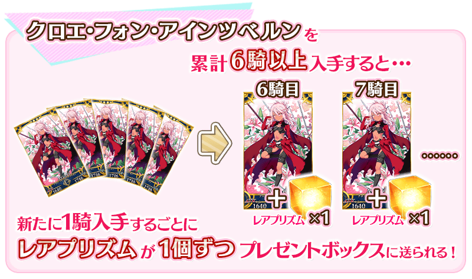
介紹克洛伊・馮・愛因茲貝倫的寶具演出！
另外，在「Fate/Grand Order」官方網站內的公告中，公開了「★4(SR)克洛伊・馮・愛因茲貝倫」的寶具演出。敬請確認。
以期間限定舉辦美遊・艾蒂菲爾特的體驗關卡！
迎接「★4(SR)美遊・艾蒂菲爾特」做為支援成員，挑戰期間限定的關卡！
別錯過體驗Servant技能與寶具的機會！
※請注意在美遊・艾蒂菲爾特體驗關卡沒有文字冒險部份。
◆美遊・艾蒂菲爾特體驗關卡舉辦期間◆
2019年1月23日(三) 17:0021:00～2月6日(三) 11:59
◆開放條件◆
滿足以下條件的Master才能參加
・通過「特異點F 炎上汙染都市 冬木」
◆關卡通過報酬◆
呼符 1張
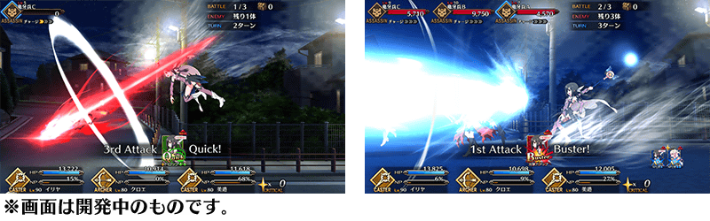
做為合作活動「復刻版:魔法少女紀行 ～Prisma・Codes～ -Re-install-」的報酬，「★5(SSR)伊莉雅絲菲爾・馮・愛因茲貝倫」的靈衣開放權登場！
做為本活動的活動道具交換的報酬，可入手上述的靈衣開放權入手。
另外，想開放靈衣開放的話，除了靈衣開放權外再加上必須滿足一些開放條件。
◆有關靈衣開放權的注意◆ ※本次追加的伊莉雅絲菲爾・馮・愛因茲貝倫的靈衣是只有外觀的變化，語音沒變化的「簡易靈衣」。 ※「★5(SSR)伊莉雅絲菲爾・馮・愛因茲貝倫」的靈衣開放權只能在合作活動「復刻版:魔法少女紀行 ～Prisma・Codes～ -Re-install-」的交換期間入手。 ※請注意未持有「★5(SSR)伊莉雅絲菲爾・馮・愛因茲貝倫」的情況，可入手靈衣開放權，但無法進行靈衣開放。
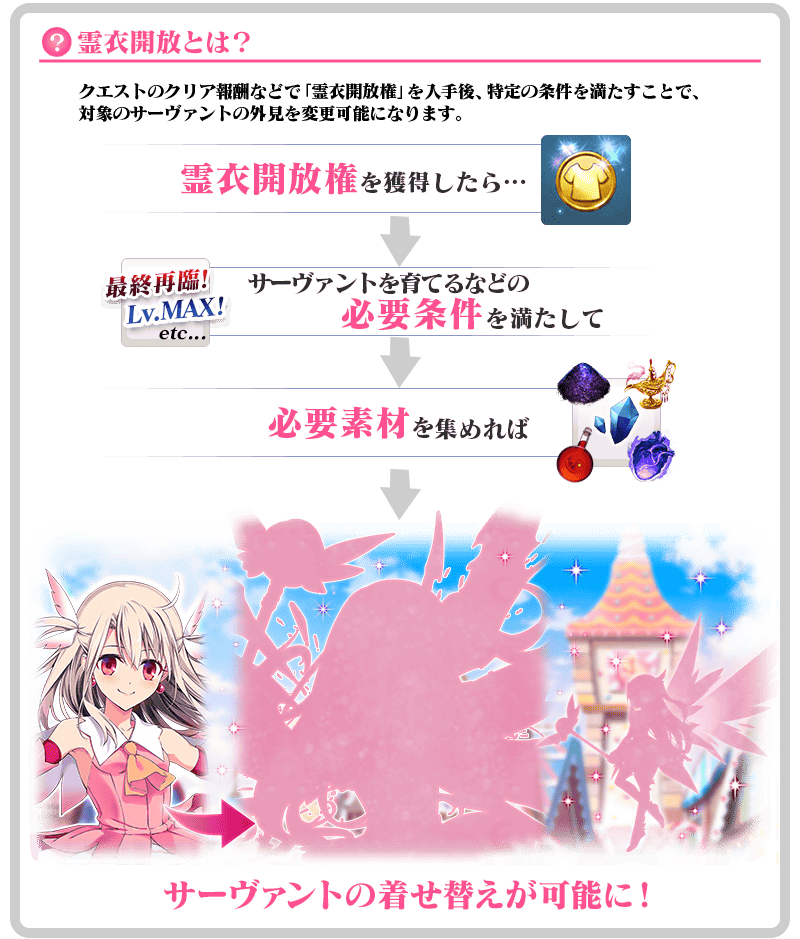
※「靈衣開放」後自動切換戰鬥角色和圖示。若想回到「靈衣開放」前的狀態和變成其他再臨階段的情況，可自Servant詳細畫面變更。 ※語音與「靈衣開放」前的狀態相同。 ※透過「靈衣開放」只變更Servant的外觀，職階和能力等沒有變化。

「靈衣開放」是自強化畫面進行。
翻新在合作活動「復刻版:魔法少女紀行 ～Prisma・Codes～ -Re-install-」活躍的「★5(SSR)伊莉雅絲菲爾・馮・愛因茲貝倫」戰鬥動作及寶具演出！
另外，在「Fate/Grand Order」官方網站內的公告中，公開了「★5(SSR)伊莉雅絲菲爾・馮・愛因茲貝倫」的寶具演出。敬請確認。
◆翻新時間◆
2019年1月23日(三) 17:00～(預定)

在Servant強化畫面的「素材一覧」追加顯示！
1.在Servant強化畫面追加「英靈結晶」的顯示
變得可在Servant強化畫面確認「英靈結晶(ATK)」與「英靈結晶(HP)」的持有數。
2.Servant強化畫面追加「叡智的業火★5(SSR)」的顯示
變得可在Servant強化畫面的EXP卡持有數一覧確認「叡智的業火★5(SSR)」的持有數。
◆追加時間◆
2019年1月23日(三) 17:00～(預定)
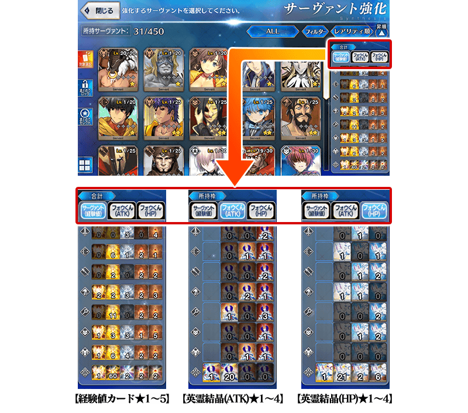
在Servant強化畫面的素材選擇時追加強化結果的預測顯示！
在Servant強化畫面選擇素材時，變得可顯示以選擇中素材強化情況的「藉強化到達等級」的預測。
◆追加時間◆
2019年1月23日(三) 17:00～(預定)
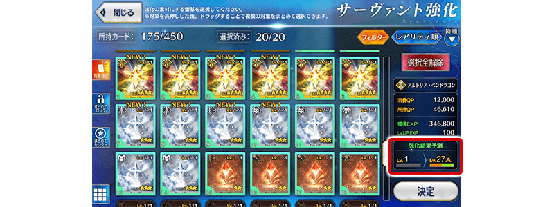
「好友・跟隨」圖示的追加！
在「好友申請」「圖示」鍵上追加「好友・跟隨」圖示。另外，在戰鬥結算後的好友申請＆跟隨畫面也追加「好友・跟隨」圖示。
◆追加時間◆
2019年1月23日(三) 17:00～(預定)
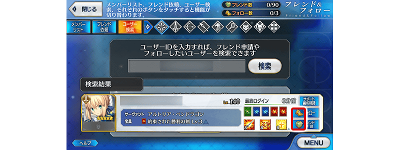
變更指令卡上的Critical發生率等的顯示時機！
在戰鬥畫面中，選擇的指令卡上「Critical發生率」與「標示狀態效果圖示」的顯示，變更為直到攻擊結束前持續顯示。
◆追加時間◆
2019年1月23日(三) 17:00～(預定)
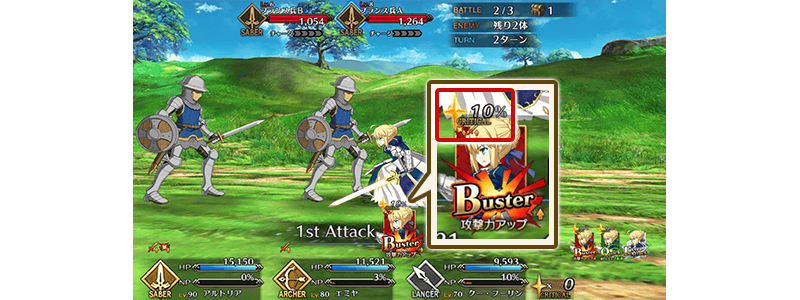
在「靈基保管室」追加活動加成篩選器！
也在靈基保管室追加活動加成篩選器，變得可只顯示持有活動加成的Servant和概念禮裝。
◆追加時間◆
2019年1月23日(三) 17:00～(預定)
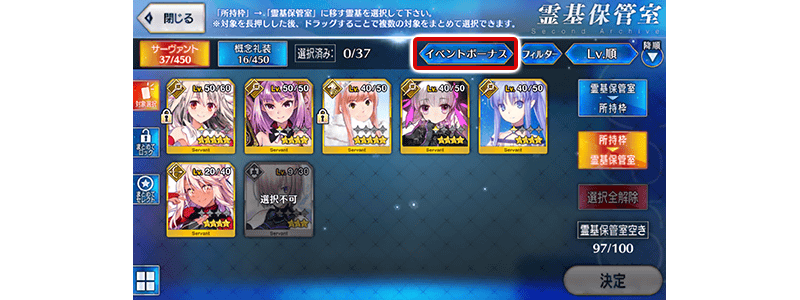
在狀態變化詳細追加「職階」及「敵人名」的顯示！
在戰鬥畫面顯示狀態變化詳細顯示時，在左上顯示對象職階及敵人名。
◆追加時間◆
2019年1月23日(三) 17:00～(預定)
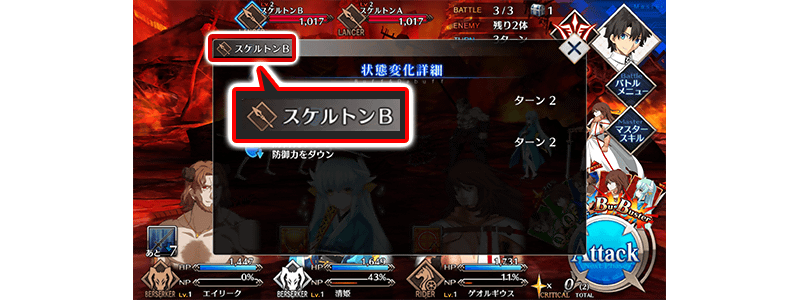
在獲得絆點數顯示追加易懂「絆點數上升效果的增加份」的顯示！
在結算畫面顯示的獲得絆點數，分開顯示「可靠關卡獲得的絆點數」與「靠一部份職階技能和概念禮裝等的效果增加的絆點數」。
增加的絆點數是在()內顯示。
◆追加時間◆
2019年1月23日(三) 17:00～(預定)
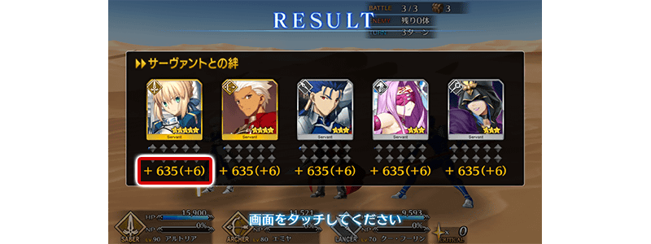
其他還有期間限定「復刻 魔法少女紀行 ～Prisma・Codes～ -Re-install-Pick Up召喚(每日交替)」同時舉辦！
關於的詳情請自下述橫幅確認。